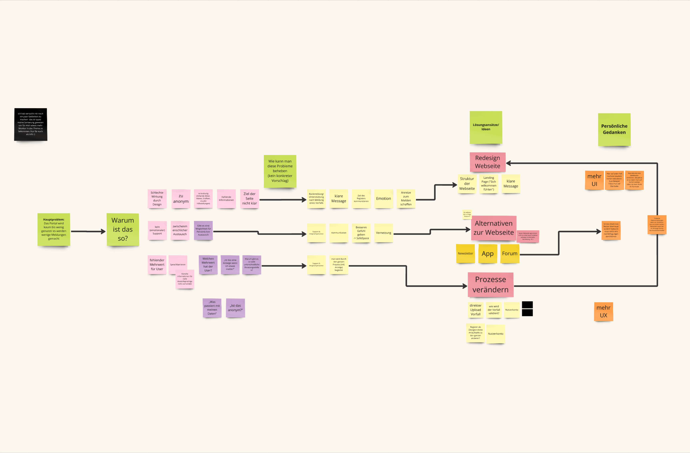
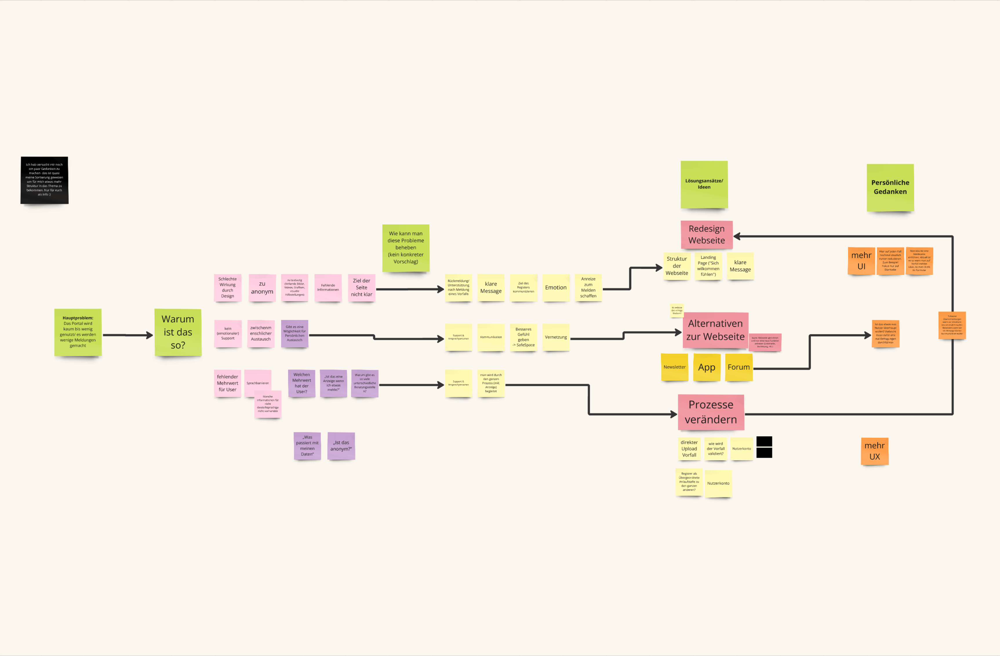
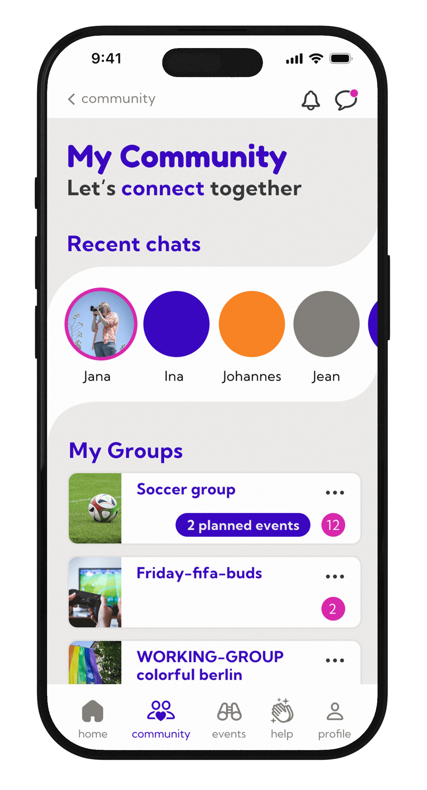
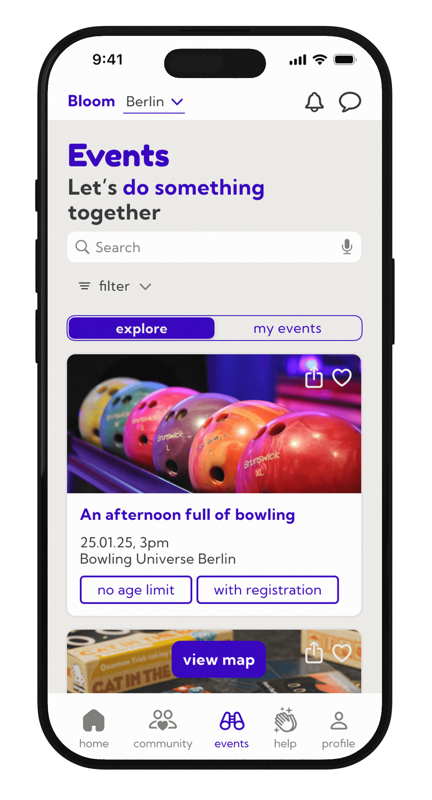
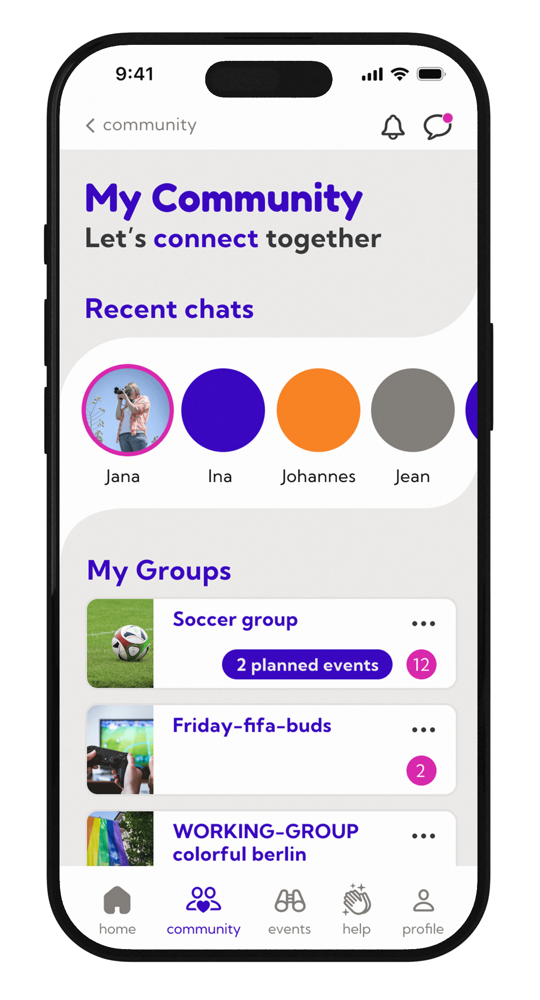
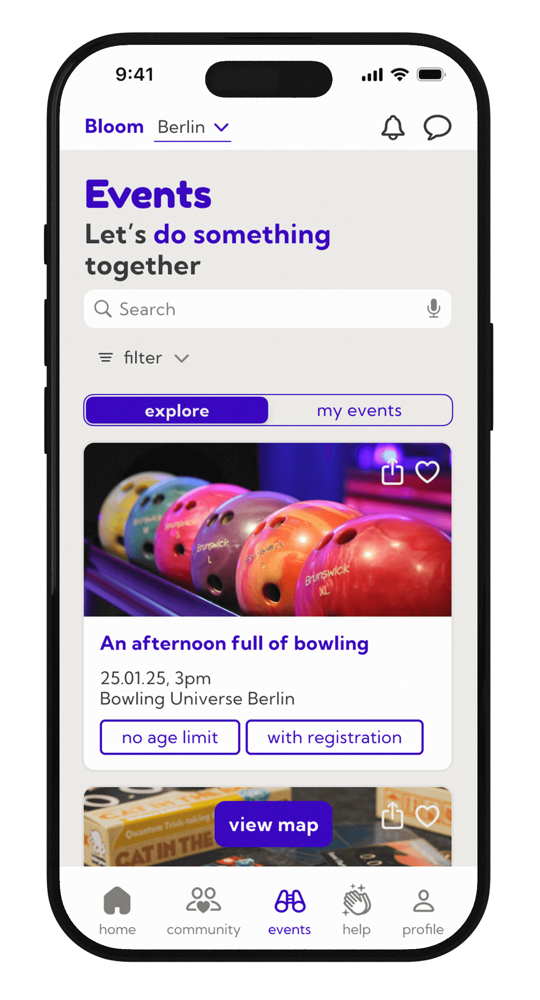
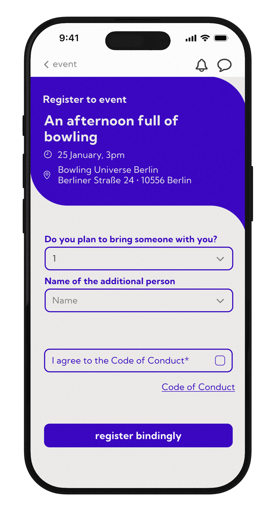
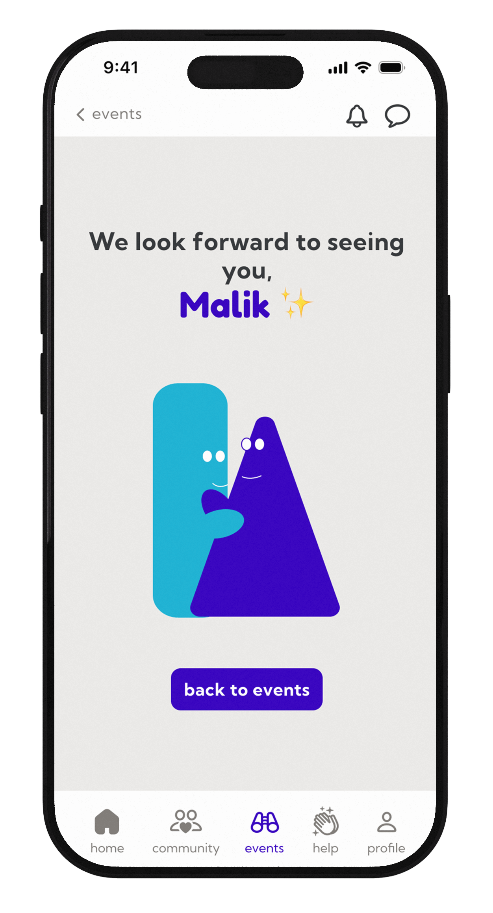
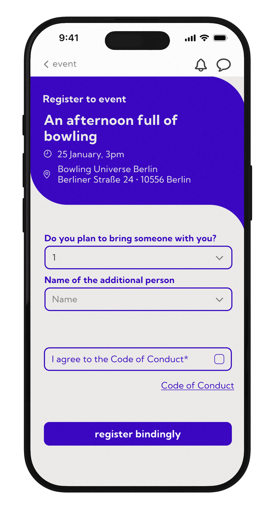
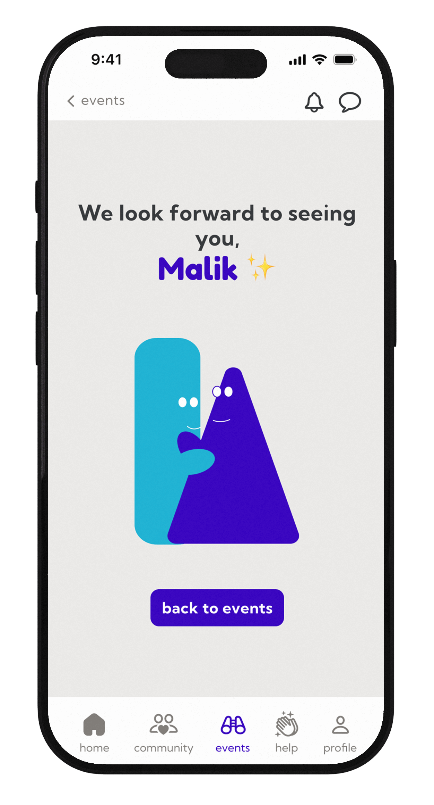

Hardfacts
Projektpartner: Jacqueline Esbach (Interfacedesign), Jolina Mumbela (Interfacedesign)
Zeitraum: April 2025 - August 2025
Kontext: Kursprojekt an der Fachhochschule Potsdam in Zusammenarbeit mit dem Musikstudio Forever 89
Projektentwicklung
Ausgangssituation
Das gesammte Kursprojekt wurde in Zusammenarbeit mit dem Studio Forever 89 geführt und wurde an das Plugin Topos des genannten Studios konzepiert. Ziel war es, ein Tool für eine selbstgewählte Zielgruppe zu entwerfen und umzusetzten. Um das Feld jedoch etwas einzugrenzen, konnte man sich an Topos orientieren.


Musik für Gehörlose
Es gibt eine Menge an Musiktools, Plugins und Geräten. Daher war es für uns wichtig, etwas nachhaltig sinnvolles zu gestalten. Somit haben wir uns auf eine Zielgruppe und ein Problem eingelassen, welches zunächst eher merkwürdig zu sein scheint: Gehörlose und hörbeinträchtigte Menschen. Unsere Forschungsfragen waren somit:
Wie wird Musik von gehörlosen und hörbeeinträchtigten Menschen wahrgenommen?
Wie kann Musik für diese Zielgruppe erlebbar gemacht werden?
 



 




 


